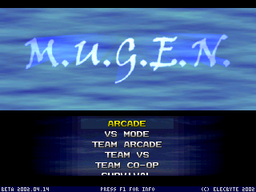

- Welcome to Touhou Wiki!
- Please register to edit. For assistance, check in with our Discord server or IRC channel.
M.U.G.E.N
| M.U.G.E.N | |
|---|---|
|
 | |
| Developer |
Elecbyte |
| Publisher |
Elecbyte |
| Released |
1999 |
| Genre |
Customizable Engine Fighting Game |
| Gameplay |
1 (or 2)-on-1 (or 2) fighting |
| Platforms | |
| Requirements |
"Minimum: Pentium 90 |
M.U.G.E.N (also written as M.U.G.E.N., MUGEN, or Mugen) is a free (but closed source) user-customizable 2D fighting game engine for PCs, created by Elecbyte. For more information about Mugen in general, including where to download each of the different versions and where to get help setting up your own game, please see Wikipedia's article on M.U.G.E.N. It's stable version is 1.0 and latest public beta is 1.1.
Touhou in M.U.G.E.N[edit]
Among the thousands of characters, stages, screenpacks, and storyboards released for use with Mugen, various Touhou Project-related creations have been done, most of which use sprites and sounds taken from the Twilight Frontier Touhou games. With these, there exist many international online video fights between the Touhou characters, along with the fighting a ridiculous amount of non-Touhou characters, where some videos have become noticeable memes and target jokes. A popular example is this video on YouTube, which is a Flandre Scarlet vs Ronald McDonald fight.
Fan-fiction of the world of Touhou have also been created with the use of Mugen, similar to how Touhou Danmakufu is used to create Touhou fangames.
General Designs[edit]
The sprites for the Touhou characters are typically ripped from the official fighting spin-off Immaterial and Missing Power, Scarlet Weather Rhapsody and Touhou Hisoutensoku. A common and rather easy way to create Touhou characters is by basing their design on an already-created character: a very simple example is using Hong Meiling's sprite and changing her colours from red and green to black and purple to represent Lie Meiling.
This also includes creating an alternative to the original character such as "Sakuya Brando", a combination of Sakuya Izayoi and Dio Brando from Jojo's Bizarre Adventure. There's also non-Touhou-based Mugen characters that take elements from Touhou, such as the Mugen joke character named Primeus; it's a giant floating salmon who shot laser beams, but it's sprite has been modified so it sometimes uses the Giant Catfish's sprites during its introduction to battle.
Character List[edit]
The list below is a excessive list of Touhou-based Mugen characters since there are a countless amount on the Internet.
| website | author | creations |
|---|---|---|
| Night's Palace | Night | Immaterial and Missing Power, Scarlet Weather Rhapsody, Touhou Hisoutensoku, MegaMari, Flandre Scarlet's background battle and other Touhou-created stages for M.U.G.E.N, especially the 1.1 beta which has stage zooming and compatible for most stages. |
| Ricepigeon's MUGEN Spot | Ricepigeon | Various Touhou characters for WinMugen and 1.0. |
| 最果ての家の離れ | Toma | Immaterial and Missing Power lifebars, Immaterial and Missing Power fight effects, Marisa Kirisame, and Patchouli Knowledge |
| 樹箱 | Ju 柊 |
Reisen Udongein Inaba a voice patch for Ju's Udongein |
| M.U.G.E.N wiki | RockMARISA | MegaMari |
| 無限高校 | Ibukah | Suika Ibuki (with voice added) |
| 永遠に完成しないお部屋 | Ina | Suika Ibuki |
| 格ゲーの奇妙な世界 | Shiroto | Yukari Yakumo, Reisen Udongein Inaba and Yuyuko Saigyouji (each in Melty Blood style), plus some patches for cabbage's Kanako Yasaka |
| Type Wild跡地 | すてぃーぶん | some Touhou Project stages |
| ChoiMUGEN | Choiyer | Immaterial and Missing Power stages |
| 0から始めるMUGEN | GATT | Reimu Hakurei, Sakuya Izayoi, an Immaterial and Missing Power logo, Immaterial and Missing Power stages, a couple Scarlet Weather Rhapsody stages, and a pair of Super Marisa Land stages |
| MCWVN! | Nachel | Remilia Scarlet, Suika, and Reimu |
| 無限庭園 | rouge noir | A Touhou stage |
| 規模縮小中 | ぼうふら | Some Touhou storyboards |
| 東方緋想天Mugen研究所 | Mikage | Suwako Moriya, Aya Shameimaru, Alice Margatroid, Youmu Konpaku, Komachi Onozuka, Marisa, Remilia, and Reisen (Suika is a future release) |
| 夜空に輝く星 | Souki | Alice Margatroid, Yuyuko Saigyouji, and Shanghai Doll |
| 翡翠の夫のはきだめ | otto | yukkuri (Yukkuri shiteitte ne!), siteittene, tank-reimu, STGmarisa, STGenemy1, yuyuyukkuriri, and a yukkurisiteittene stage |
| 東方夢幻館 | Kurogane Aotsuki |
Reimu, Yukari, Yuyuko, Youmu, Patchouli Knowledge, Flandre, Shinki; plus Immaterial and Missing Power screenpack, Immaterial and Missing Power intro, and Suika's Immaterial and Missing Power stage Suika, Sakuya, Aya, Hong Meiling and Shanghai+Alice |
| Kohaku | Kohaku | Touhou Hisoutensoku lifebars, Youmu, Meiling, Tenshi Hinanawi, Aya, Remilia, Marisa, Sakuya, Utsuho Reiuji, Youmu's Stage |
| Wind Watching Mugen 関係物置き場 | Kazami | AI patches for nukenashi's Sakuya, Nachel's Reimu, Toma's Marisa and Patchouli, and Aotsuki's Meiling |
| 名称不明-旧MUGEN GRADE OMEGA- | QWERTY | Marisa's daytime Immaterial and Missing Power stage |
| 奇妙なmugen生活 | bravo | Meilyne Cujo (Combination of Hong Meiling and Jotaro Kujo's stand, Star Platinum) AI Patch (Password: YES!YES!YES!) |
| 甲房記 | hyouenojou | Reisen E. Inaba (Combination of Reisen Udongein Inaba and Hol Horse's stand, The Emperor) |
| Chronosの墓場 | Chronos |
Youmu K. Chariot (Combination of Youmu and Jean-Pierre Polnareff's stand, Silver Chariot) Final Sakuya (Based on the final form of Dio Brando after he sucks Joseph Joestar's blood) |
| / Skydrive | Shuu | Toki Hakurei and REIsen U Inaba. |
| Infinite Loli Factory | Seravy | Massive Touhou M.U.G.E.N database (has links for most of the Touhou M.U.G.E.N characters ever made; updated regularly) |